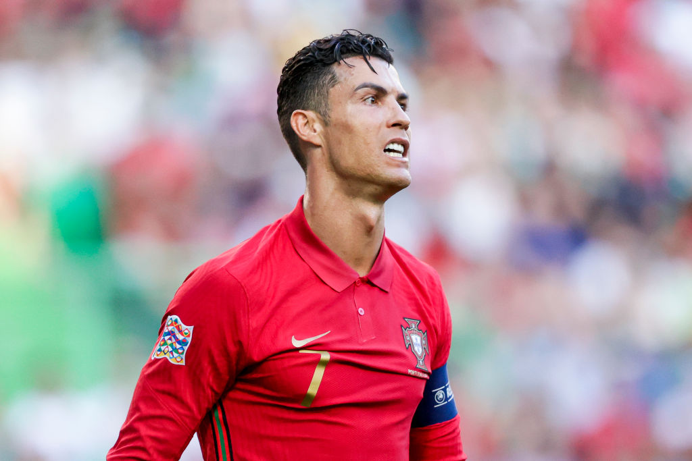
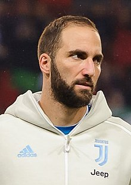

Rodil se je 5. februarja 1985 v Funchalu na Madeiri, materi Mariji Dolores dos Santos Aveiro in očetu Joséu Dinisu Aveiro. Odraščal je s starejšim bratom Hugom, ima pa še dve starejši sestri Elmo in Katio. Katia je pevka in je na Portugalskem znana pod vzdevkom »Ronalda«. Ime Ronaldo je na Portugalskem zelo redko, Cristiano pa je dobil ime po ameriškem predsedniku Ronaldu Reaganu.
Z nogometom se je začel ukvarjati, ko je bil star tri leta in kasneje pri šestih letih, ko je začel hoditi v šolo. V mladosti je navijal za klub Benfica, čeprav se je kasneje pridružil Sportingu. Njegova prva ekipa je bila amaterska Andorinha, za katero je začel igrati pri osmih letih. Po letu 1995, ko je bil star deset let, je njegov sloves na Portugalskem začel rasti. Obe najboljši ekipi Madeire sta si želeli njegov podpis - CS Marítimo in CD Nacional. Boljša ekipa, Marítimo, je zamudila sestanek z managerjem Andorinhe Ruiem Santosem in tako je Ronaldo podpisal z Nacionalom. Po uspešni kampanji pri Nacionalu, ga je odkupil Sporting.
(rojen 10. decembra 1987) je argentinski profesionalni nogometaš, ki igra na položaju napadalca in je kapetan pri nogometnem klubu Major League Soccer Inter Miami. Higuaín z vzdevkom El Pipita ali Pipa je plodovit napadalec, znan po svojem očesu za gol, močni postavi in napadalnih gibih.
Higuaín je svojo kariero začel pri argentinskem klubu River Plate, preden je januarja 2007 prestopil v Real Madrid za 12 milijonov evrov. V Španiji je osvojil več domačih odličij, vključno s tremi naslovi La Lige, in dosegel 107 golov v 190 ligaških nastopih. Julija 2013 se je za 40 milijonov evrov pridružil italijanskemu Napoliju, kjer je v svoji prvi sezoni osvojil Coppa Italia. V sezoni 2015–16 je dosegel 36 prvenstvenih golov, osvojil naslov Capocannoniere in izenačil 87 let star rekord Gina Rossettija glede zadetkov v sezoni italijanskega prvoligaša. Kot rezultat njegovega strelskega podviga v Neaplju, ga je italijanski prvak Juventus leta 2016 podpisal za 90 milijonov evrov, kar je postal eden najvišjih nogometnih prestopov vseh časov in najvišji prestop v zgodovini italijanskega kluba. V prvih dveh sezonah z Juventusom je zmagal v domačih dvojicah, s klubom pa je leta 2017 dosegel tudi finale lige prvakov. Leta 2018 je bil posojen AC Milanu, kasneje pa angleškemu Chelseaju januarja 2019, kjer je osvojil Evropsko ligo UEFA, preden se je poleti istega leta vrnil k Juventusu in svoji trofejni omari dodal še en naslov v Serie A. sezona.